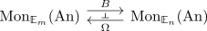

E_n grothendieck group functor
Proposition
Let $n \leq m$ and $\mathrm{An}$ be Anima Then under $\mathrm{Mon}_{\mathbb{E}_{m}}(\mathrm{An}) \simeq \mathrm{Mon}_{\mathbb{E}_m}(\mathrm{An}_*) \simeq \mathrm{Mon}_{\mathbb{E}_{n}}(\mathrm{Mon}_{\mathbb{E}_{m-n}}(\mathrm{An}_*)) \simeq \mathrm{Mon}_{\mathbb{E}_{n}}(\mathrm{Mon}_{\mathbb{E}_{m-n}((\mathrm{An}))$ postcomposition with the looping / delooping (cf. recognition principle for anima valued groups and connected pointed animas + implicitly including from $\mathrm{An}_{*, \geq 1} \rightarrow \mathrm{An}_*$)

Proof
postcomposition with an adjoint & adjoints restrict to full subcategories